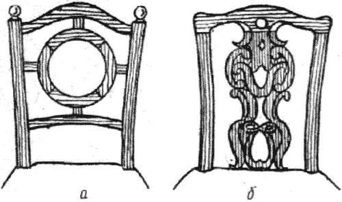
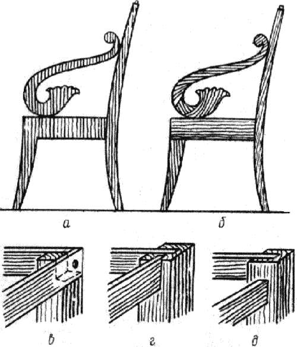
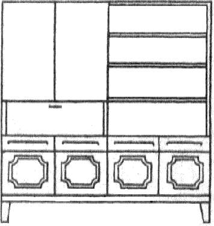
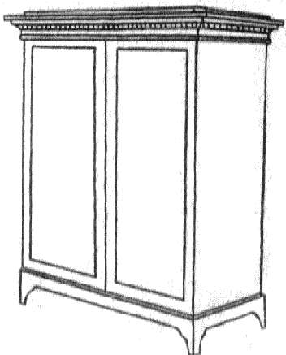
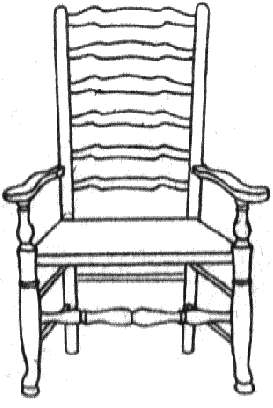
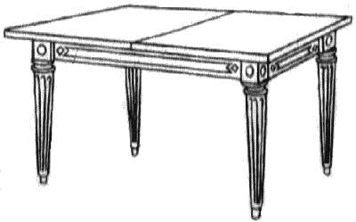
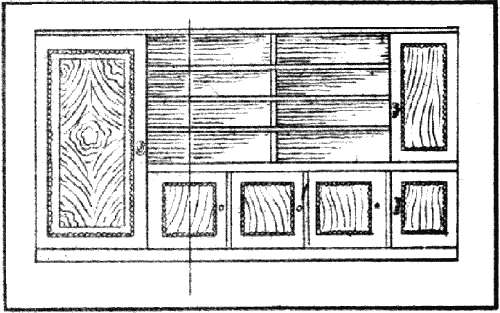
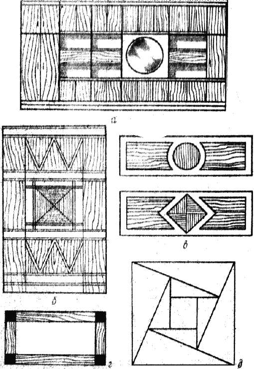
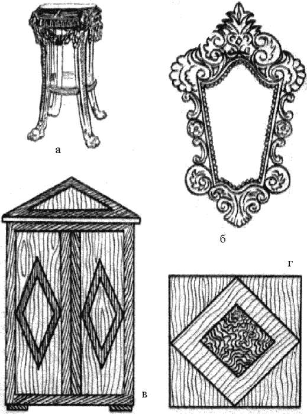

Композиция в конструировании мебели.

Композиция – важнейший элемент формы, придающий изделию цельность, соподчиняющий его компоненты друг другу.
Не вдаваясь в теоретические глубины, мы под словом «композиция» будем понимать систему правил, закономерностей и приемов, которая служит для организации или построения проекта будущего изделия мебели, придания ему цельности, выразительности и гармоничности.
Итак, ведущим качеством предмета является его выразительность, на основе которой строится основное впечатление, производимое этим предметом на зрителя, и его красота. Разглядывая такой предмет, зритель должен понимать его устройство, назначение, материал, из которого он сделан. Если в результате такого рассмотрения появляется эстетическое удовлетворение предметом, это значит, что в нем есть красота.
Цельность вещи тесно связана с совершенством ее общей структуры и законченностью. Впечатление цельности создается композиционно обусловленным ограничением общей формы, ясно читаемой системой внутреннего развития от начала до конца, соразмерностью деталей и частей, при которой не возникает желания что-либо добавить или убрать, а сами части не выпирают наружу из общего целого, не кажутся излишне тонкими или, наоборот, толстыми. Цельность вещи дает возможность сразу охватить ее взглядом и одновременно определить основную часть, вокруг которой размещаются или к которой примыкают части менее значительные, но необходимые. Легче всего это качество выявляется в произведениях живописи, памятниках, где скульптура неотделима от цокольной части – пьедестала, в орнаментах, менее выпукло – в изделиях мебельного и декоративного искусства.
Каждый предмет из окружающего нас мира имеет так называемую структуру, т. е. систему внешних геометризованных, оцениваемых взглядом деталей, показывающих устройство этого предмета и порядок взаимосвязи деталей между собой. Структура не является точным соответствием конструкции. Так, соединение ножек стола с царгами может быть выполнено разными конструктивными приемами, структура же этого места в столе остается одной и той же. Понятие совершенства структуры в предмете характеризуется впечатлением естественной слитности частей в одно целое, причем слитность эта, помимо механически прочностных требований, обусловленных назначением предмета, учитывает и соотносительные размеры частей, их пропорции, естественность соединений разных материалов, естественность расположения украшений и т. п.

Рис. 9. Зависимость качества структуры от конструкции: а – непрочная деталь из-за большого числа соединений; б – прочная деталь из цельной резной доски
Под словом «часть» (элемент) нужно понимать не только изготовляемую отдельно деталь (ножку, царгу) или группу деталей, объединяемых по структурным признакам (цоколь), но и ту, которая не может быть отделена от целого, а изготовляется совместно (шар с резной поверхностью, доска, покрытая живописью, сложной формы керамический сосуд). Приданию цельности композиции помогает использование одинаковых качеств частей, составляющих композицию, эти качества могут быть чисто поверхностными, например: один материал для основных частей предмета, общий характер отделки, общий прием получения формы (строганая, резная, точеная), и глубинными, создающими впечатление специального характера, – впечатление прочности, добротности, выражаемой массивом дерева или приемами креплений (металл), впечатление богатства, ценности предмета, где для этой характеристики о основу вводятся отделки, украшения и детали из особо ценных материалов или тонкая художественная обработка деталей и основы.
Использование таких приемов придает вещи единство впечатления. Если же основа несовершенна, то единство приемов является
главным средством для уменьшения этих недостатков.
Впечатлению цельности способствует также так называемая тектоника, представляющая собой такую характеристику структуры предмета, которая определяет соответствие задуманных форм и деталей и их соединений между собой свойствам применяемого материала – дерева, действительной конструктивной работе материала под нагрузками, испытываемыми предметом в эксплуатации. Изделие, в котором такое соответствие имеется во всех видимых глазом частях, является тектоничным. Тектоника связана с внешним обликом предмета и детали, работу которой оценивают по размерам, форме и направлению волокон. Этим она отличается от конструкции, которая может быть и скрытой. Хотя тектоника – понятие, не относящееся непосредственно к композиции, влияние ее на качество композиционного решения предмета мебели очень велико.

Рис. 10. Приемы выражения тектоники: а – нетектоничная оклейка (в рост); б – тектоничная оклейка боковой кромки; в – нетектоничное соединение царги с ножкой; г, д – тектоничные соединения царги с ножкой
Например, долевая оклейка торцов или поперечных кромок щитов шпоном порождает сомнение в естественности детали и тем самым снижает качество предмета, хотя технические и эксплуатационные свойства его при этом не намного хуже.
Выразительность предмета повышается выделением в нем главной детали, которая легко становится заметной на общем фоне окружающих или примыкающих к ней частей (рис. ниже). Этот главный элемент или часть предмета условно называется центром композиции. Так, развитый карниз двустворчатого шкафа является композиционным центром этого предмета.

а)

б)

в)

г)
Рис. 11. Размещение главного композиционного элемента в предметах мебели: а – подшкафник; б – карниз; в – спинка; г – ножки и царги
Подчиненные детали сложной композиционно развитой формы также могут иметь свои центры, но по силе выразительности они должны быть менее значительными, чем общий центр. Введение главного композиционного элемента и надлежащая соподчиненность остальных деталей усиливает внутреннюю связь деталей между собой.
Для определения формы и места размещения композиционного центра анализируют структуру предмета, в которой выбирают крупную и развитую часть, поставленную в наиболее выгодные условия по отношению к зрителю.
Эта главная часть предмета всегда содержит внутри себя некоторую линию или точку, относительно которой возникает разновесие боковых частей или верха и низа. Для плоскостных предметов с осевой симметрией эта точка центра тяжести композиции обычно находится посредине обозреваемой взглядом плоскости. Для предметов пространственных она может находиться и внутри их структуры.
Уравновешенность может достигаться одинаковостью правых и левых частей предмета, основанной на симметрии, а также более сложным способом. Сущность его заключается в том, что уравновешиваемые элементы композиции или группы их получают такую форму и обработку, что их выразительность выравнивается. Так, элемент небольшой площади с сильным рельефом может быть уравновешен другим – большой площади, но плоским. Этот прием лежит в основе гармонизации предметов с внутренней асимметрией. В ней отдельные элементы, имеющие свое композиционное построение (оси, ритм, центр), уравновешивают друг друга таким образом, что общее целое получается зрительно устойчивым и статичным. Это непременное условие композиции предметов мебели (рис. ниже).

Рис. 12. Равновесие в несимметричных композициях
Надо учитывать. что композиционное равновесие не обязательно соответствует только глубокой статической неподвижности. Оно может быть и динамичным, где внутренняя динамика или движение частей может создавать и впечатление неустойчивости, но не выходящей за рамки целого и обязательно погашаемой деталями, которые в завершении все же выравнивают и успокаивают внутреннее движение и не выпускают его наружу, за границы композиции. В соответствии с этим композиции могут быть устойчивые статические; неустойчивые статические, т. е. такие, где нет внутреннего движения, но нет и упорядоченного спокойствия; устойчивые динамические – такие, которые производят впечатление движения, но не разрушают общего порядка.
Впечатление устойчивости создается использованием совершенных геометрических фигур – равносторонних и равнобедренных треугольников, квадратов, арок, трапеций, а в объемных композициях – кубов, пирамид и прямых призм (рис. ниже).

Рис. 13. Использование правильных геометрических фигур для выявления устойчивого композиционного центра: а – на крупном предмете; б – на крупной детали; в – на небольшой детали; г – на рамке; д – формальная композиция
Эллипс, круг, шар, цилиндр придают композиции динамику, так как эти фигуры неустойчивые в физическом и практическом смысле.
Заметную роль в выразительности предмета, а значит, и в выразительности его композиции играет гармоничность, т. е. такое качество предмета, при котором глаз не ощущает несоответствия размеров частей и деталей, сочетания цветов не раздражают и не кажутся неприятными. Гармония обязывает столяра (проектировщика) сделать свое изделие так, чтобы ни одна честь его не казалась чужеродной или несоразмерной. Гармония не может существовать отдельно, она всегда связана с материальной основой, на которой развивается. Гармоничность может быть основана на природном чутье, но, как правило, вырабатывается опытом работы над созданием предметов, а также при анализе аналогичных образцов. Гармоничность – непременное условие создания впечатления завершенности и законченности предмета.
Внешние качества формы, такие, как свет, объем, цвет и поверхность с ее фактурой, последовательно убывают по силе выразительности.
Это можно легко проследить и на примерах мебельного искусства. В мебели не делают светящихся элементов и зеркало, которое является источником отраженного света, представляет собой пример элемента, обладающего наибольшей силой выразительности. Какова бы ни была обработка рамы или подзеркальника, само зеркало всегда будет занимать доминирующее положение.
Использование локального цвета в столярно-мебельном деле встречается весьма редко, так как основу предмета составляет натуральное дерево, но цветные вставки могут быть использованы в качестве композиционных центров при общем плоскостном решении предмета. В цветных предметах мебели деревянная основа и все тонкости столярной работы должны превалировать над цветом.
И, наконец, выразительность плоскости, замыкающей указанный ряд, уменьшается по мере сглаживания четкости текстурного рисунка или фактуры. Этим объясняется композиционный эффект декоративных вставок в плоскость, где фоном служит текстура менее выразительная.

Рис. 14. Выразительность внешних качеств формы: а – рельеф (объем); б – зеркало (свет); в – тон (цвет); г – фактура